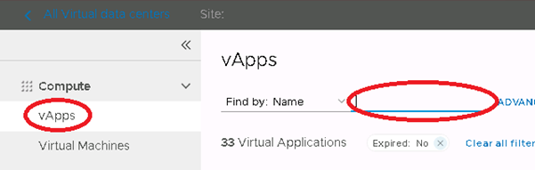

Known Issues in VMware Cloud Director
Overview
This article describes some of the issues we've identified when using VMware Cloud Director, along with workarounds if available.
VMRC console window doesn't show correct VM name
Issue
When you change the name of a VM, the VMRC console shows the old VM name.
Solution
There currently isn't a fix for the VMRC console. We recommend using the web console instead, which should show the new VM name.
Date formats are in MM/DD/YYY format
Issue
Dates are displayed using the American MM/DD/YYYY format.
Solution
It isn't currently possible to change the date formatting. We've raised a request with VMware to enable the customisation of date formatting.
vApp search functionality doesn't work correctly
Issue
Search for a vApp using the search icon on the right-hand side of the menu bar.
Select the vApp.

The details of the vApp are displayed, including the VMs contained in the vApp.

Search for a different vApp using the same search method and select it.
The details of the second vApp are displayed, but the name of vApp is still shown as the first vApp.

Any options selected from the Actions menu will apply to the first searched vApp not the second one.
Solution
We recommend searching for vApps by clicking vApps in the left navigation panel, then using the search functionality on the vApps page.

Cannot amend VM hardware configuration
Issue
If you've enabled the Enable VM to join domain options for a VM, either currently or in the past, you won't be able to amend the hardware configuration of the VM.
Solution
If you encounter this issue, you can raise a Service Request to obtain a workaround.
Guest customisation failing
Issue
Guest customisation is failing in the following:
For existing VMs - Windows 2012, Windows 2012R2 and Windows 2016
For new VMs - Windows 2012, Windows 2012R2
When setting a new administrator password and/or changing the IP address then forcing re-customisation at power-on, the settings are ignored.
Solution
The workaround is to deploy the template, but before powering on, change the VM type to Windows 2016. Power on using Force Customization.
Additional information
For other known issues with VMware Cloud Director 10.1, see the VMware Cloud Director 10.1 Release Notes.
Feedback
If you find a problem with this article, click Improve this Doc to make the change yourself or raise an issue in GitHub. If you have an idea for how we could improve any of our services, send an email to feedback@ukcloud.com.